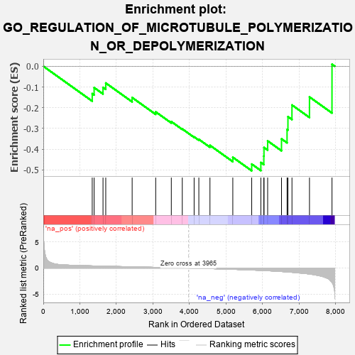
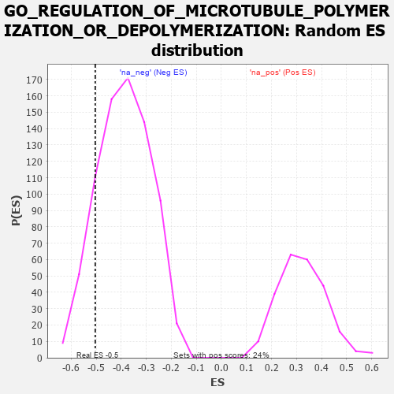

| | | Dataset | 7d |
| Phenotype | NoPhenotypeAvailable |
| Upregulated in class | na_neg |
| GeneSet | GO_REGULATION_OF_MICROTUBULE_POLYMERIZATION_OR_DEPOLYMERIZATION |
| Enrichment Score (ES) | -0.50381696 |
| Normalized Enrichment Score (NES) | -1.2990843 |
| Nominal p-value | 0.14454664 |
| FDR q-value | 0.47023025 |
| FWER p-Value | 1.0 |
Table: GSEA Results Summary

Fig 1: Enrichment plot: GO_REGULATION_OF_MICROTUBULE_POLYMERIZATION_OR_DEPOLYMERIZATION
Profile of the Running ES Score & Positions of GeneSet Members on the Rank Ordered List
| PROBE | GENE SYMBOL | GENE_TITLE | RANK IN GENE LIST | RANK METRIC SCORE | RUNNING ES | CORE ENRICHMENT | | 1 | TBCD | | | 1338 | 0.422 | -0.1321 | No |
| 2 | FKBP4 | | | 1390 | 0.412 | -0.1032 | No |
| 3 | DRG1 | | | 1633 | 0.368 | -0.1021 | No |
| 4 | TPX2 | | | 1708 | 0.355 | -0.0810 | No |
| 5 | MET | | | 2430 | 0.240 | -0.1511 | No |
| 6 | MAP2 | | | 3074 | 0.140 | -0.2200 | No |
| 7 | FES | | | 3501 | 0.077 | -0.2670 | No |
| 8 | SPAST | | | 3801 | 0.027 | -0.3023 | No |
| 9 | ABL1 | | | 4125 | -0.027 | -0.3406 | No |
| 10 | ARL2 | | | 4254 | -0.050 | -0.3524 | No |
| 11 | APC | | | 4558 | -0.107 | -0.3814 | No |
| 12 | HDAC6 | | | 5183 | -0.244 | -0.4389 | No |
| 13 | TTBK2 | | | 5700 | -0.376 | -0.4716 | Yes |
| 14 | DCTN1 | | | 5950 | -0.454 | -0.4640 | Yes |
| 15 | CKAP5 | | | 6032 | -0.482 | -0.4328 | Yes |
| 16 | RAC1 | | | 6036 | -0.484 | -0.3917 | Yes |
| 17 | GBA2 | | | 6136 | -0.515 | -0.3600 | Yes |
| 18 | TRPV4 | | | 6515 | -0.668 | -0.3502 | Yes |
| 19 | CLIP1 | | | 6667 | -0.746 | -0.3052 | Yes |
| 20 | PAK1 | | | 6691 | -0.757 | -0.2432 | Yes |
| 21 | SPEF1 | | | 6801 | -0.815 | -0.1869 | Yes |
| 22 | CIB1 | | | 7280 | -1.152 | -0.1482 | Yes |
| 23 | CAV3 | | | 7896 | -2.739 | 0.0094 | Yes |
Table: GSEA details [plain text format]

Fig 2: GO_REGULATION_OF_MICROTUBULE_POLYMERIZATION_OR_DEPOLYMERIZATION: Random ES distribution
Gene set null distribution of ES for GO_REGULATION_OF_MICROTUBULE_POLYMERIZATION_OR_DEPOLYMERIZATION